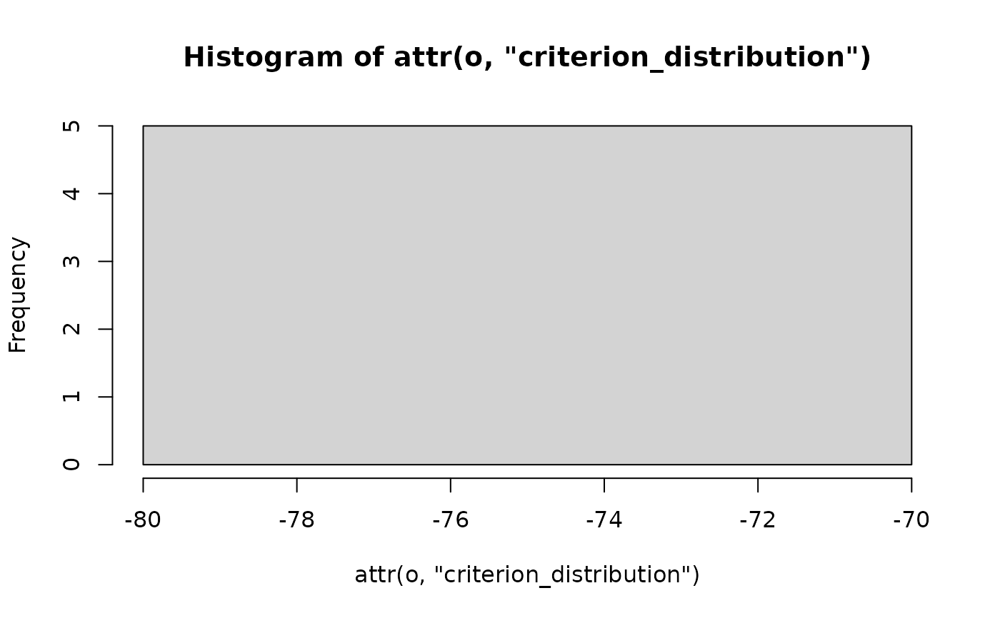

Often the best seriation method for a particular dataset is not know and
heuristics may produce unstable results.
seriate_best() and seriate_rep() automatically try different seriation methods or
rerun randomized methods several times to find the best and order
given a criterion measure. seriate_improve() uses a local improvement strategy
to improve an existing solution.
Usage
seriate_best(
x,
methods = NULL,
control = NULL,
criterion = NULL,
rep = 10L,
parallel = TRUE,
verbose = TRUE,
...
)
seriate_rep(
x,
method = NULL,
control = NULL,
criterion = NULL,
rep = 10L,
parallel = TRUE,
verbose = TRUE,
...
)
seriate_improve(
x,
order,
criterion = NULL,
control = NULL,
verbose = TRUE,
...
)Arguments
- x
the data.
- methods
a vector of character string with the name of the seriation methods to try.
- control
a list of control options passed on to
seriate(). Forseriate_best()control needs to be a named list of control lists with the names matching the seriation methods.- criterion
seriate_rep()chooses the criterion specified for the method in the registry. A character string with the criterion to optimize can be specified.- rep
number of times to repeat the randomized seriation algorithm.
- parallel
logical; perform replications in parallel. Uses
foreach::foreach()if a%dopar%backend (e.g., doParallel::doParallel) is registered.- verbose
logical; show progress and results for different methods
- ...
further arguments are passed on to the
seriate().- method
a character string with the name of the seriation method (default: varies by data type).
- order
a
ser_permutationobject forxor the name of a seriation method to start with.
Value
Returns an object of class ser_permutation.
Details
seriate_rep() rerun a randomized seriation methods to find the best solution
given the criterion specified for the method in the registry.
A specific criterion can also be specified.
Non-stochastic methods are automatically only run once.
seriate_best() runs a set of methods and returns the best result given a
criterion. Stochastic methods are automatically randomly restarted several times.
seriate_improve() improves a seriation order using simulated annealing using
a specified criterion measure. It uses seriate() with method "GSA",
a reduced probability to accept bad moves, and a lower minimum temperature. Control
parameters for this method are accepted.
Criterion
If no criterion is specified, then the criterion specified for the method in
the registry (see [get_seriation_method()]) is used. For methods with no
criterion in the registry (marked as "other"), a default method is used.
The defaults are:
dist:"AR_deviations"- the study in Hahsler (2007) has shown that this criterion has high similarity with most other criteria.matrix: "Moore_stress"
Parallel Execution
Some methods support for parallel execution is provided using the foreach package. To use parallel execution, a suitable backend needs to be registered (see the Examples section for using the doParallel backend).
References
Hahsler, M. (2017): An experimental comparison of seriation methods for one-mode two-way data. European Journal of Operational Research, 257, 133–143. doi:10.1016/j.ejor.2016.08.066
Examples
data(SupremeCourt)
d_supreme <- as.dist(SupremeCourt)
# find best seriation order (tries by by default several fast methods)
o <- seriate_best(d_supreme, criterion = "AR_events", rep = 5)
#> Criterion: AR_events
#> Performing:
#> spectral - Method not randomized. Running once.
#>
#> MDS - Method not randomized. Running once.
#>
#> QAP_2SUM - Replications 5 .....
#> Found orders with ‘AR_events’ in the range 5 to 5 - returning best
#>
#> QAP_BAR - Replications 5 .....
#> Found orders with ‘AR_events’ in the range 7 to 72 - returning best
#>
#> QAP_LS - Replications 5 .....
#> Found orders with ‘AR_events’ in the range 5 to 12 - returning best
#>
#> QAP_Inertia - Replications 5 .....
#> Found orders with ‘AR_events’ in the range 5 to 12 - returning best
#>
#> TSP - Replications 5 .....
#> Found orders with ‘AR_events’ in the range 7 to 7 - returning best
#>
#> OLO_average - Method not randomized. Running once.
#>
#> Results (first was chosen):
#> method criterion secs
#> 1 spectral 5 0.279
#> 3 QAP_2SUM 5 1.318
#> 5 QAP_LS 5 1.322
#> 6 QAP_Inertia 5 1.317
#> 4 QAP_BAR 7 1.321
#> 7 TSP 7 1.322
#> 8 OLO_average 7 0.266
#> 2 MDS 10 0.268
#>
o
#> object of class ‘ser_permutation’, ‘list’
#> contains permutation vectors for 1-mode data
#>
#> vector length seriation method
#> 1 9 Spectral
pimage(d_supreme, o)
 # run a randomized algorithms several times. It automatically chooses the
# LS criterion. Repetition information is returned as attributes
o <- seriate_rep(d_supreme, "QAP_LS", rep = 5)
#> Replications 5 .....
#> Found orders with ‘LS’ in the range -71.63244 to -71.63244 - returning best
attr(o, "criterion")
#> [1] -71.63244
hist(attr(o, "criterion_distribution"))
# run a randomized algorithms several times. It automatically chooses the
# LS criterion. Repetition information is returned as attributes
o <- seriate_rep(d_supreme, "QAP_LS", rep = 5)
#> Replications 5 .....
#> Found orders with ‘LS’ in the range -71.63244 to -71.63244 - returning best
attr(o, "criterion")
#> [1] -71.63244
hist(attr(o, "criterion_distribution"))

pimage(d_supreme, o)
 if (FALSE) { # \dontrun{
# Using parallel execution on a larger dataset
data(iris)
m_iris <- as.matrix(iris[sample(seq(nrow(iris))),-5])
d_iris <- dist(m_iris)
library(doParallel)
registerDoParallel(cores = detectCores() - 1L)
# seriate rows of the iris data set
o <- seriate_best(d_iris, criterion = "LS")
o
pimage(d_iris, o)
# improve the order to minimize RGAR instead of LS
o_improved <- seriate_improve(d_iris, o, criterion = "RGAR")
pimage(d_iris, o_improved)
# available control parameters for seriate_improve()
get_seriation_method(name = "GSA")
} # }
if (FALSE) { # \dontrun{
# Using parallel execution on a larger dataset
data(iris)
m_iris <- as.matrix(iris[sample(seq(nrow(iris))),-5])
d_iris <- dist(m_iris)
library(doParallel)
registerDoParallel(cores = detectCores() - 1L)
# seriate rows of the iris data set
o <- seriate_best(d_iris, criterion = "LS")
o
pimage(d_iris, o)
# improve the order to minimize RGAR instead of LS
o_improved <- seriate_improve(d_iris, o, criterion = "RGAR")
pimage(d_iris, o_improved)
# available control parameters for seriate_improve()
get_seriation_method(name = "GSA")
} # }